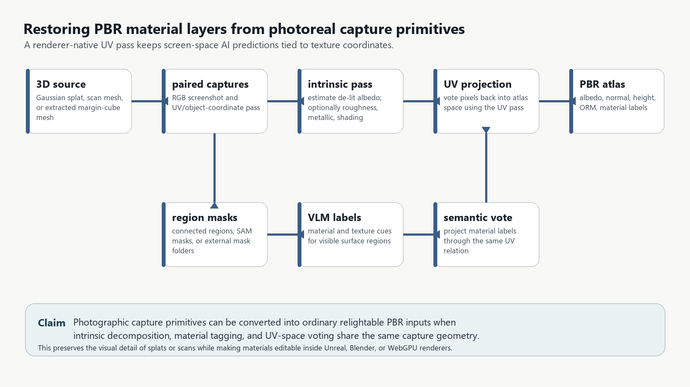
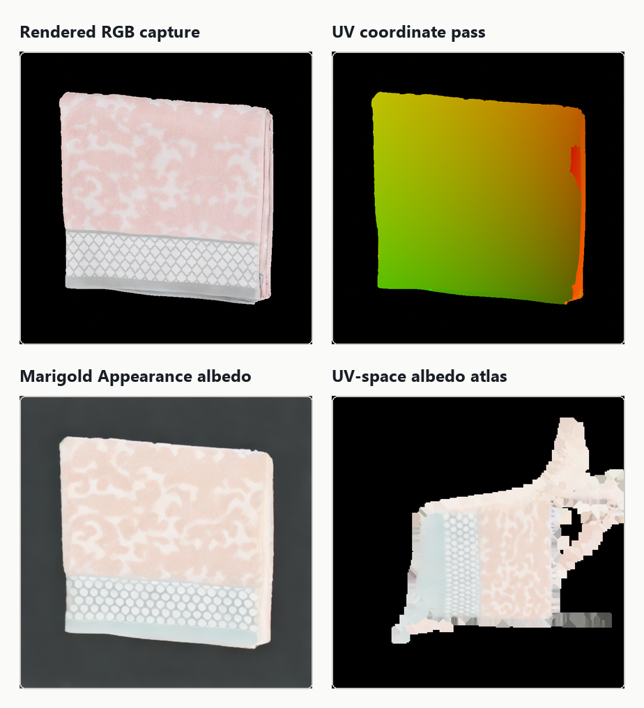
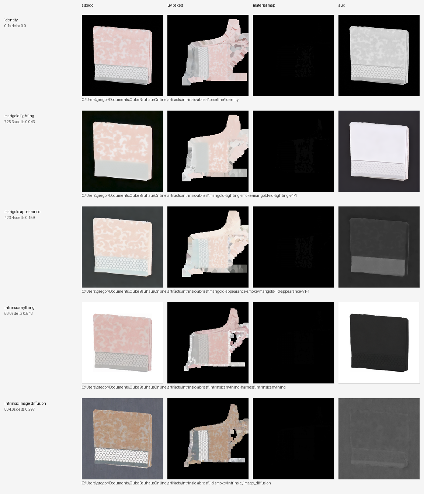
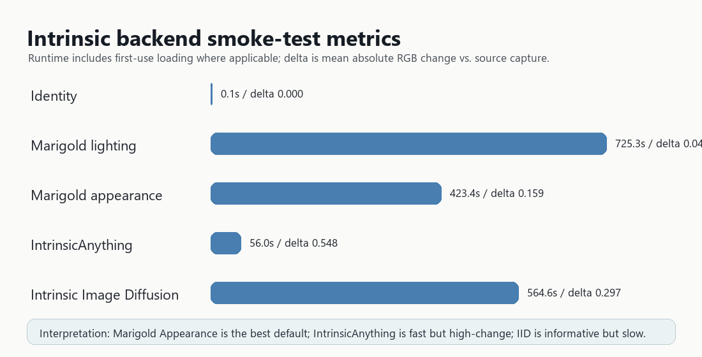
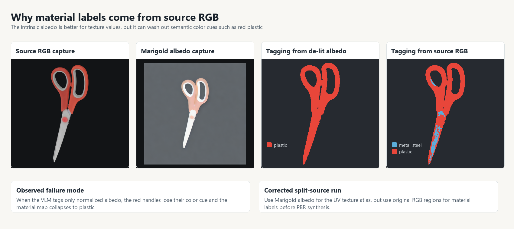
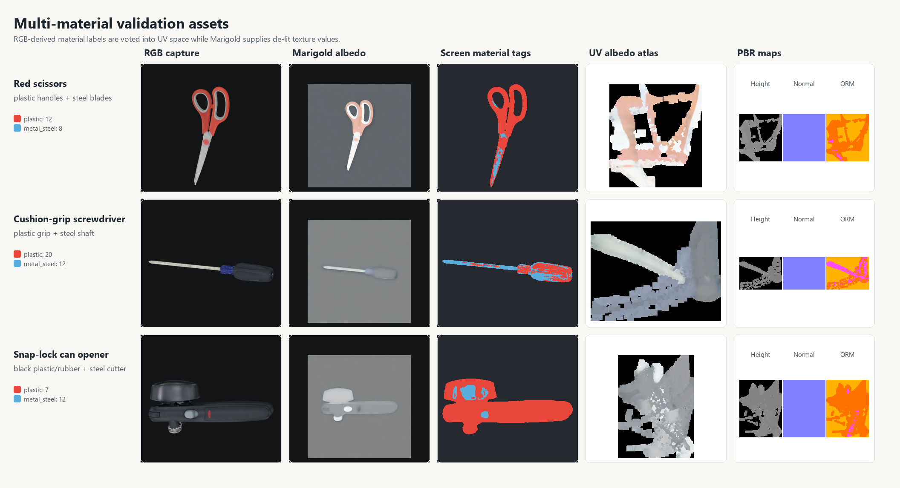
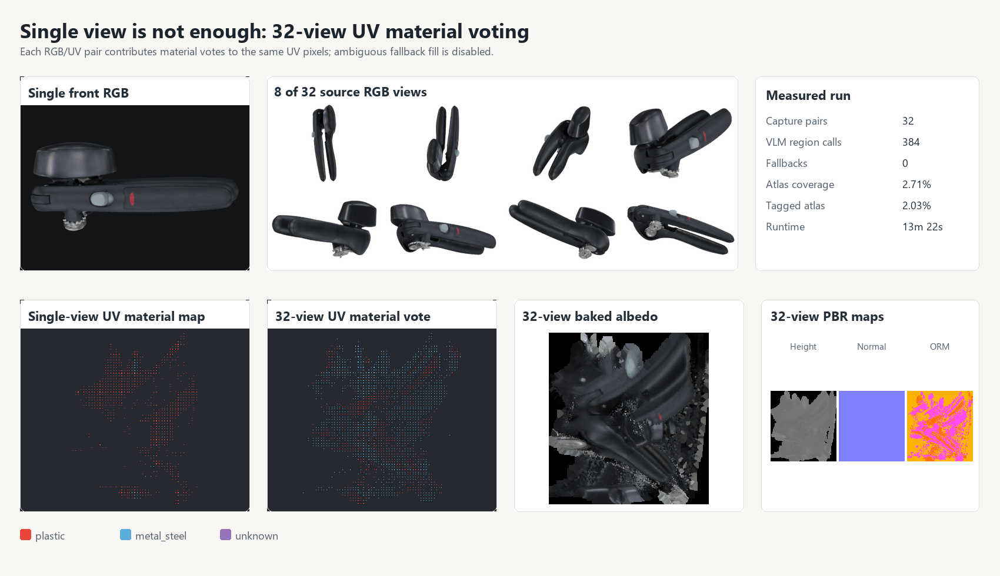
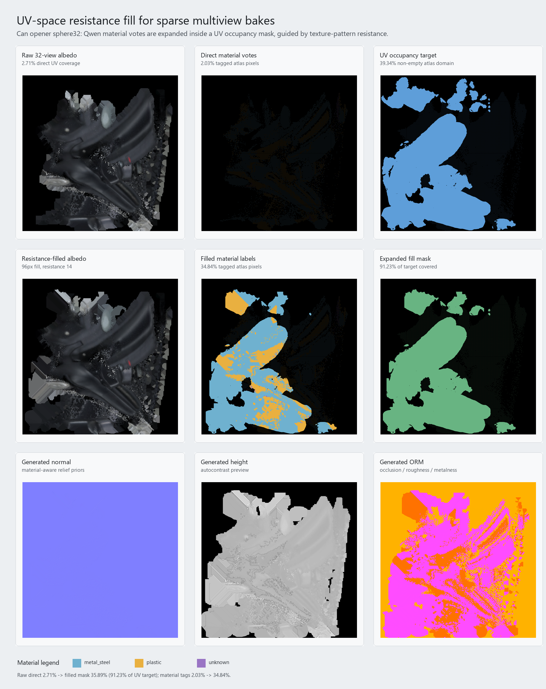

Restoring PBR Material Layers from Photoreal Capture Primitives
A screen-space intrinsic decomposition and UV-voting pipeline for Gaussian splats, scans, and extracted meshes.

1. Motivation
Photoreal capture primitives are strong at reproducing the lighting conditions under which they were observed. That strength becomes a weakness when an application needs new lights, edited materials, dynamic time of day, gameplay illumination, or physically plausible asset reuse. Gaussian splats encode radiance-like appearance in point or ellipsoid attributes; scanned meshes often carry a single baked diffuse texture; extracted surfaces from splats or dense captures may inherit colors that include shadows, highlights, and camera exposure.
Can we take a Gaussian splat, extracted mesh, or scanned textured mesh, screenshot it in world space while preserving texture/UV correspondence, and recover a usable PBR material layer stack?
2. Method
The pipeline keeps every screen-space prediction grounded by an explicit UV pass.
| Stage | Input | Output | Purpose |
|---|---|---|---|
| Render/capture | Mesh, splat-derived mesh, or scanned asset | *_color.png, *_uv.png | Capture visible appearance and texture-coordinate relation. |
| Intrinsic/de-lighting | Color capture | Albedo candidate, optional shading/roughness/metal/specular | Remove lighting from material decisions. |
| Region segmentation | Source color capture, or albedo for ablations | Connected regions or external masks | Split material-relevant surface regions. |
| VLM material tagging | RGB region crops | Material labels and texture cues | Convert visual regions into semantic PBR priors before color cues are washed out. |
| UV vote | De-lit albedo, RGB labels, UV pass | UV-space albedo atlas and material map | Preserve renderer-native texture coordinates. |
| UV completion | Sparse albedo, material map, UV occupancy mask | Completed atlas domain | Fill voids while resisting texture edges and empty atlas padding. |
| PBR synthesis | Albedo + material labels | Normal, height, ORM | Generate a renderer-consumable material set. |

3. Backend Selection Smoke Test
The initial validation object was a towel asset from Google Scanned Objects. Five intrinsic/de-lighting backends were run through the same harness, and successful outputs were baked to UV space. This chose Marigold Appearance as the practical default, but the towel was not a strong material-divergence test.
| Backend | Produced channels | Runtime | Delta vs. RGB | Observation |
|---|---|---|---|---|
| Identity baseline | Albedo copy, grayscale shading | 0.1 s | 0.000 | No de-lighting; useful control. |
| Marigold Lighting | Albedo, shading, residual | 725.3 s | 0.043 | Strong lighting separation, but washed out woven detail. |
| Marigold Appearance | Albedo, roughness, metallicity | 423.4 s | 0.159 | Best default in this test; preserved textile regions. |
| IntrinsicAnything | Albedo, specular | 56.0 s | 0.548 | Fast after setup; lifts background and compresses contrast. |
| Intrinsic Image Diffusion | Albedo, roughness, metal | 564.6 s | 0.297 | Successful but gray/brown relighting bias. |


4. Multi-Material Validation
The towel smoke test was replaced by scanned objects with clear material divergence: red scissors, a cushion-grip screwdriver, and a snap-lock can opener. The single-view versions are useful diagnostics, but not a complete solution. They show why one view is insufficient: the UV atlas remains sparsely sampled, screen-space occlusion hides important materials, and a dominant visible part can overwhelm the material vote. The corrected run uses Marigold Appearance for de-lit albedo values, but performs segmentation and VLM material tagging on original RGB captures.

| Asset | Expected material contrast | RGB-derived VLM segment labels | Vision calls | Fallbacks | Direct atlas coverage |
|---|---|---|---|---|---|
| Red scissors | Plastic handles, steel blades | plastic 12, metal_steel 8 | 21 | 0 | 0.83% |
| Cushion-grip screwdriver | Plastic grip, steel shaft | plastic 20, metal_steel 12 | 33 | 0 | 0.47% |
| Snap-lock can opener | Black plastic/rubber, steel cutter | plastic 7, metal_steel 12 | 20 | 0 | 0.91% |

The toaster candidate was also tested. It exposed a useful remaining problem: a large reflective unassigned body region was filled as stone by the fallback heuristic even though smaller segmented regions were correctly tagged as metal_steel. This shows that manufactured-object priors and better region proposal masks matter for appliances and broad glossy surfaces.
4.1 Overlapping multiview voting
We added a generated sphere32 Blender capture mode that renders 32 overlapping RGB/UV pairs from a Fibonacci sphere around the asset. The existing baker already accumulates material votes per UV texel across all capture pairs, so the multiview fix is a capture protocol change rather than a new atlas algorithm.
On the can opener, the single-view material atlas was front-view biased: 9,158 tagged atlas pixels voted plastic and only 416 voted metal_steel. The 32-view pass used 384 region-level VLM calls with zero fallbacks and changed the UV vote to 14,973 metal_steel, 6,008 plastic, and 287 unknown pixels. Direct atlas coverage rose from 0.91% to 2.71% at 512px captures. This still is not full texture coverage, but it is a much better validation of the UV voting mechanism.

| Capture protocol | Capture pairs | VLM region calls | Fallbacks | Direct atlas coverage | Tagged atlas coverage | Main issue |
|---|---|---|---|---|---|---|
| Single front view | 1 | 20 | 0 | 0.91% | 0.91% | Front-view material bias. |
sphere32 multiview | 32 | 384 | 0 | 2.71% | 2.03% | Costly; still sparse at 512px captures. |
4.2 UV-space resistance fill
The multiview vote gives higher-confidence samples, but it is still sparse because many atlas texels are never hit by a screen pixel. A naive dilation can fill those holes, but it also spreads across empty atlas padding and material boundaries. The implemented fix is a resistance-weighted UV flood constrained by a target mask. The target mask represents known UV island territory; for this scanned can opener we derived it from non-empty source texture texels, and for splat-derived meshes the same mask should come from a UV occupancy rasterization of the extracted triangles.
For each missing texel, neighboring samples vote with a weight proportional to exp(-resistance * color_difference) in a provisional guide image. This allows fills to continue through smooth texture regions while resisting strong albedo or material-edge changes. Material IDs are expanded with the same guide, so labels spread through compatible UV neighborhoods instead of simple nearest-neighbor padding.
On the can opener, direct 32-view coverage was 2.71% of the atlas and direct tagged coverage was 2.03%. The inferred UV occupancy target covered 39.34% of the atlas. A 96px resistance fill covered 35.89% of the atlas, or 91.23% of the UV target, and expanded tagged material pixels to 34.84%. The filled material map contained 266,033 metal_steel, 98,414 plastic, and 883 unknown pixels.

| UV completion stage | Atlas coverage | Tagged atlas coverage | Notes |
|---|---|---|---|
Direct sphere32 samples | 2.71% | 2.03% | Trusted but too sparse for renderer export. |
| UV occupancy target | 39.34% | n/a | Estimated island domain from the scan texture. |
| 96px resistance fill | 35.89% | 34.84% | Covers 91.23% of the target without filling empty atlas padding. |
4.3 PBR atlas generation
Each corrected and completed material map was combined with a de-lit Marigold albedo atlas and converted into renderer-style maps.
| Generated map | Role |
|---|---|
albedo_baked.png | De-lit UV-space base color candidate. |
source_baked_albedo_materials.png | Integer material-label atlas from original RGB regions. |
pbr/albedo_baked_n.png | Normal map synthesized with material-aware relief priors. |
pbr/albedo_baked_h.png | Height map for parallax/displacement-style workflows. |
pbr/albedo_baked_orm.png | Occlusion, roughness, metallicity map. |
5. Reproducibility
The interactive comparison app is available locally:
python C:\Users\gregor\Documents\CubeBauhausOnline\tools\intrinsic_ab_test.py --app --host 127.0.0.1 --port 7862The current best default is to run Marigold Appearance first, then run material segmentation/tagging from the original RGB capture and combine both products in the atlas stage:
python C:\Users\gregor\Documents\CubeBauhausOnline\tools\intrinsic_ab_test.py `
--backends marigold_appearance `
--size 1024 `
--device cuda `
--output C:\Users\gregor\Documents\CubeBauhausOnline\artifacts\intrinsic-ab-test\app-runs32x overlapping Color + UV captures -> Marigold Appearance albedo -> RGB-connected region segmentation -> Qwen VLM tags -> UV vote -> UV occupancy resistance fill -> PBR atlas
6. Limitations
This is a prototype smoke test, not a benchmark. Single-view examples are not sufficient for material correctness; overlapping multiview capture is required. Even 32 views at 512px produced only 2.71% direct atlas coverage on the can opener, so a UV-space completion stage is required before renderer export. Roughness, metallicity, height, and normal maps are plausible renderer inputs rather than measured ground truth; VLM material labels can fail on ambiguous or mixed-material crops; and Gaussian splat assets still need a robust way to render or derive coordinate/UV passes and UV occupancy masks.
7. Conclusion
The prototype demonstrates an end-to-end path from photoreal capture appearance to renderer-native PBR maps. The important engineering move is to preserve UV correspondence while applying screen-space AI models. With paired RGB/UV captures, diffusion-based intrinsic decomposition can reduce lighting leakage, VLM tagging can recover semantic material classes, multiview voting can place those observations into atlas space, and UV occupancy resistance fill can turn sparse trusted samples into conventional albedo, normal, height, ORM, and material-label atlases.
References
- Kerbl, B., Kopanas, G., Leimkuehler, T., and Drettakis, G. 3D Gaussian Splatting for Real-Time Radiance Field Rendering. arXiv and project page.
- Burley, B. Physically-Based Shading at Disney. SIGGRAPH Course Notes, 2012. Publication page.
- PRS-ETH. Marigold. GitHub repository.
- PRS-ETH. Marigold IID Appearance v1-1 Model Card. Hugging Face.
- ZJU3DV. IntrinsicAnything. GitHub and project page.
- Kocsis, P., Sitzmann, V., and Niessner, M. Intrinsic Image Diffusion for Indoor Single-view Material Estimation. CVPR 2024. arXiv.
- Kirillov, A., et al. Segment Anything. ICCV 2023. arXiv.
- Downs, L., et al. Google Scanned Objects: A High-Quality Dataset of 3D Scanned Household Items. ICRA 2022. arXiv.
- Cronos3k. pbr-from-pixelart. GitHub repository.